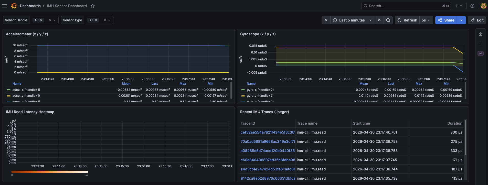

ローカル可視化基盤 — セットアップ & 運用ドキュメント
このページでは、IMU CLI 向けのローカル可観測性基盤 (OTel Collector → Prometheus / Jaeger → Grafana) のセットアップと運用方法を説明します。
1. アーキテクチャ概要
graph LR
CLI["imu CLI<br/>(--otel フラグ)"]
subgraph obs["可観測性スタック (Docker)"]
COLLECTOR["OTel Collector<br/>:4317 gRPC / :4318 HTTP"]
PROMETHEUS["Prometheus<br/>:9090"]
JAEGER["Jaeger<br/>:16686"]
GRAFANA["Grafana<br/>:3000"]
end
CLI -->|"OTLP gRPC<br/>メトリクス + トレース"| COLLECTOR
COLLECTOR -->|"Prometheus remote-write<br/>(:8889 スクレイプ)"| PROMETHEUS
COLLECTOR -->|"OTLP トレース"| JAEGER
PROMETHEUS -->|"データソース"| GRAFANA
JAEGER -->|"データソース"| GRAFANAコンポーネント一覧
| コンポーネント | イメージ | 役割 |
|---|---|---|
| OTel Collector | otel/opentelemetry-collector-contrib |
OTLP テレメトリを受信し、各バックエンドへ転送 |
| Prometheus | prom/prometheus |
Collector からメトリクスをスクレイプして保存 |
| Jaeger | jaegertracing/all-in-one |
分散トレースの保存と可視化 |
| Grafana | grafana/grafana |
統合ダッシュボード (Prometheus + Jaeger データソース) |
2. クイックスタート
前提条件
Step 1 — .env の作成
cp .env.template .env
.env を編集し、必要に応じてパスワードを変更します（ローカル開発ではデフォルト値のままでも構いません）：
GF_SECURITY_ADMIN_PASSWORD=changeme # Grafana 管理者パスワード
GF_VIEWER_PASSWORD=viewerpass # Grafana ビューアーパスワード
Step 2 — スタックの起動
make obs-up
以下のコンテナがバックグラウンドで起動します：
| コンテナ | ポート |
|---|---|
adl-otel-collector |
4317 (gRPC), 4318 (HTTP) |
adl-prometheus |
9090 |
adl-jaeger |
16686 |
adl-grafana |
3000 |
すべてのサービスが正常に起動するまで、10 秒程度お待ちください。
Step 3 — テレメトリの送信
--otel フラグを付けて IMU CLI を実行し、メトリクスとトレースをローカルの Collector に送信します：
uv run python -m ai_driven_development_labs.imu.cli read \
--hal mock --bus mock --count 10 --interval 1.0 --otel
デフォルトでは http://localhost:4317 に OTLP gRPC で送信します。
変更する場合は OTEL_EXPORTER_OTLP_ENDPOINT 環境変数で上書きしてください。
Step 4 — Grafana へのログイン
ブラウザで http://localhost:3000 を開き、以下の認証情報でログインします：
| 項目 | 値 |
|---|---|
| ユーザー名 | admin |
| パスワード | .env の GF_SECURITY_ADMIN_PASSWORD (デフォルト: changeme) |
初回起動時に ビューアー アカウント (viewer / GF_VIEWER_PASSWORD の値) が自動作成されます。
ログイン後、IMU Sensor Dashboard を開くと、加速度計・ジャイロスコープのリアルタイム値、 IMU 読み取りレイテンシのヒートマップ、Jaeger の最新トレース一覧を確認できます。

3. トラブルシューティング
ポート衝突 — コンテナが起動しない
ポートがすでに使用中の場合、Docker はバインドに失敗します。
Error response from daemon: Ports are not available: exposing port TCP 0.0.0.0:3000 -> 0.0.0.0:0: ...
競合しているプロセスを特定して停止します：
# macOS / Linux
sudo lsof -i :<PORT>
# プロセスを停止（<PID> を実際の PID に置き換えてください）
kill <PID>
または compose.observability.yml のホスト側ポートマッピングを変更します：
ports:
- "3001:3000" # ホスト 3001 → コンテナ 3000 にマッピング
Collector ログの確認
Collector がテレメトリを受信しているか確認するには：
make obs-logs
Collector コンテナのみを確認する場合：
docker logs adl-otel-collector --follow
以下のような行が出力されていれば正常です：
MetricsExporter {"resource metrics": 1, "metrics": 6, "data points": 6}
TracesExporter {"resource spans": 1, "spans": 1}
Grafana に「No data」と表示される
- Collector がデータを受信しているか確認します（上記参照）。
- http://localhost:9090/targets で Prometheus のスクレイプ状況を確認します。
- Grafana の Explore で Prometheus データソースを選択し、
imu_accel_xなどの IMU メトリクス名でクエリします。
すべてのデータをリセットする
make obs-down # コンテナと名前付きボリューム（Prometheus + Grafana データ）を削除
make obs-up
4. クリーンアップ
スタックを停止し、すべてのコンテナ・ネットワーク・永続ボリュームを削除するには：
make obs-down
ボリュームを保持したままコンテナのみ停止する場合（履歴データを次回起動時に引き継ぐ）：
docker compose -f compose.observability.yml down